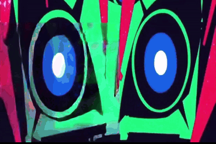

> tú: startup
FUKO:
> tú:
AUTO
FUKO.SYS // LIVE SCAN
NOTEBOOK

FUKO // CAPRI OS
ONLINE
Hablar por micrófono
Escribir mensaje
Mirar mi pantalla ahora
Configurar Conexiones (OpenClaw & Antigravity)
Ver Skills (OpenClaw + AGY)
Sentarse en ventana activa
Sentarse / Flotar aquí
⬇ Bajar al suelo
Caminar por la pantalla
Bailar
Glitch / Teletransportar
Ir a dormir
Escucha continua (Manos libres)
Pausado
Voz de Fuko (TTS)
Activa
Movimiento autónomo
Frecuente
Cerebro IA
Auto (OpenClaw+Argon)
Reaccionar sola a mi pantalla
Activo
Modo: Oculta en notebook (Solo asomarse)
Desactivado
Abrir Mainframe
Salir